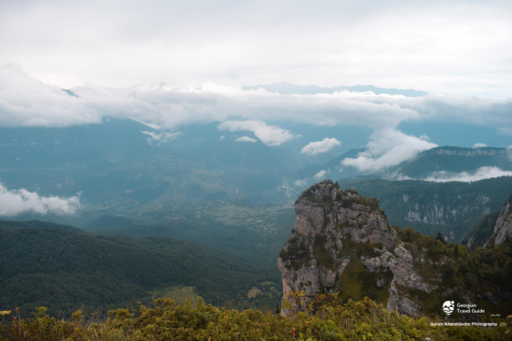

ხვამლის მასივი
ხვამლის მასივი ლეჩხუმში, ცაგერისა და წყალტუბოს მუნიციპალიტეტების საზღვარზე მდებარეობს. მისი სიმაღლე 2002 მეტრია. იგი ორმაგი კუესტაა. მასივი სამხრეთისკენ 300 მეტრის სიმაღლის ქარაფს აჩენს, სადაც ხვამლის ისტორიული ქვაბ-სახიზარი მდებარეობს. ხვამლი შერეული ტყითაა შემოსილი. მღვიმეებიდან აღსანიშნავია თეკენთერი და ყინულოვანი მღვიმე - ბოგა. ხვამლზე დგას წმ. გიორგის სახელობის ეკლესია. ყოველ წელს იმართება დღესასწაული ხვამლობა, ამ დროს ხვამლის ეკლესიას უამრავი ადამიანი სტუმრობს. მთიდან უკიდეგანო გაშლილი ხედი იშლება, რაც დიდ შთაბეჭდილებას ახდენს მნახველზე. ხვამლის ერთ-ერთ გამოქვაბულში შემორჩენილია წითელი საღებავით შესრულებული განვითარებული შუა საუკუნეების ნახატი გამოსახულებები. ხვამლის მასივის შესახებ სხვადასხვა ისტორიულ წყაროში გვხვდება ინფორმაცია, მათ შორისაა ქართლის ცხოვრება: “მაშინ არღარა იყო ღონე. დაამტკიცეს, რათა გაყონ სამეფო და საჭურჭლე ორად... და განყვეს სამეფო და საჭურჭლენი გარნა ხვამლისა ქვაბსა, რომელ ედვა. მცირე გამოიღეს და გაიყვეს და უფროსი ქვაბსავე დაუტევეს. ხოლო იგი ჯაჭვსა ხელდებული სალმასური და თვალი იგი პატივცემული გვრდემლი და მარგალიტი იგი დიდი, რომლისა სწორი არავის სადა უხილავს, ესე სამივე რუსუდანის ძესა დავითს მიუხვდა” - როგორც ჩანს ხვამლის კლდეში ქართველ მეფეთა განძთსაცავი ყოფილა. მას ასევე იხსენიებს ფრანგი მწერალი ჟიულ ვერნი სათავგადასავლო რომანში - “შეუპოვარი კერაბანი”, ცნობილ მითთან დაკავშირებით (ლეგენდის თანახმად ხვამლზე მიაჯაჭვეს პრომეთე): “ამ მთებში, რომლებიც კვეთენ ჰორიზონტს თანამედროვე ქუთაისთან, იაფეტისა და კლიმენას შვილი პრომეთე, რომელმაც მოიტაცა ცეცხლი, ზევსის ბრძანებით მიჯაჭვული იქნა ხომლის მწვერვალზე და მას ყორანი უკორტის გულ-ღვიძლს”. ხვამლის მთა ულამაზესი ბუნებით, საინტერესო ისტორიითა და მისტიკურობით ერთ-ერთი განსაკუთრებული ადგილია საქართველოში და მრავალ მოგზაურობის მოყვარულს იზიდავს. კლდოვანები, მინდვრები, ტყეები, საოცარი ხედები და მითებისა და რეალობის საზღვარზე მოგზაურობა წარუშლელ შთაბეჭდილებას ახდენს ნებისმიერ მნახველზე.

მერია
რუსთაველის ქუჩა N 58
(+995) 599 18 24 25
tsagerimeria@gmail.com
საკრებულო
რუსთაველის ქუჩა N 69
(+995) 551 17 97 41
tsagerisakrebulo@gmail.com